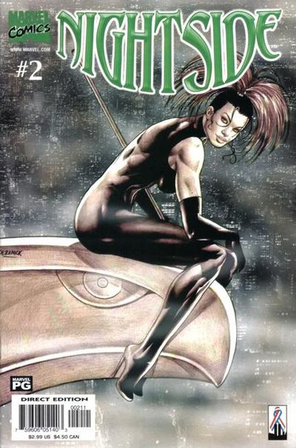
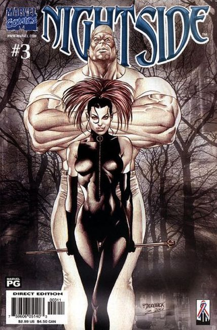
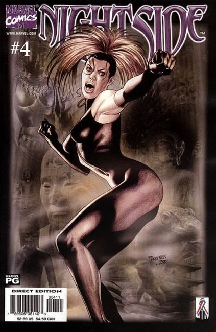

NOTE: Different character than Chris Claremont and Dave Cockrum's Nightside from X-Men.
Award-winning novelist Robert Weinberg brings an all-new tale of mystery and horror to Marvel. Her name is Sydney Taine, and by trade, she is a detective. But her investigations,and her clients, are far more dangerous than those of an ordinary private eye's. Her work takes her into the darkest corners of society, to those places and beings that most people don't even know exist. Into the Nightside.

She moves in a world of warring factions of supernatural creatures that call themselves "The Others." They appear to be human, but behind the facade lie thirsts, passions, and powers far beyond any normal human's. For you see, they've lived among us since before recorded history. Joining her is her partner Key "Ape" Largo, whose incredible intellect and heart are hidden in a massive body. Together, they stand between us and the forces of darkness that are concealed under the shade of night!

Sydney Taine is a woman who walks the narrow path dividing good from evil, the gray line that separates the daytime from the nightside. She's a detective and she knows a lot of secrets concerning the living and the undead. But no one knows very much at all about Sydney other than that she solves crimes that ordinary crime solvers can't. The Others avoid the police and politicians at all cost. Taine is one of the few humans they trust, and some of them wonder about her. A few elders speculate behind locked doors that perhaps Taine is yet a third lifeform, a race called the Players. Could all life on Earth, both Humans and Others, be mere pawns in a vast game for unknown stakes played by a select few like Sydney Taine? When asked, Taine laughs and walks away. But she never answers.
